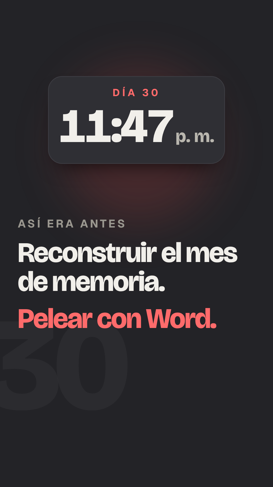
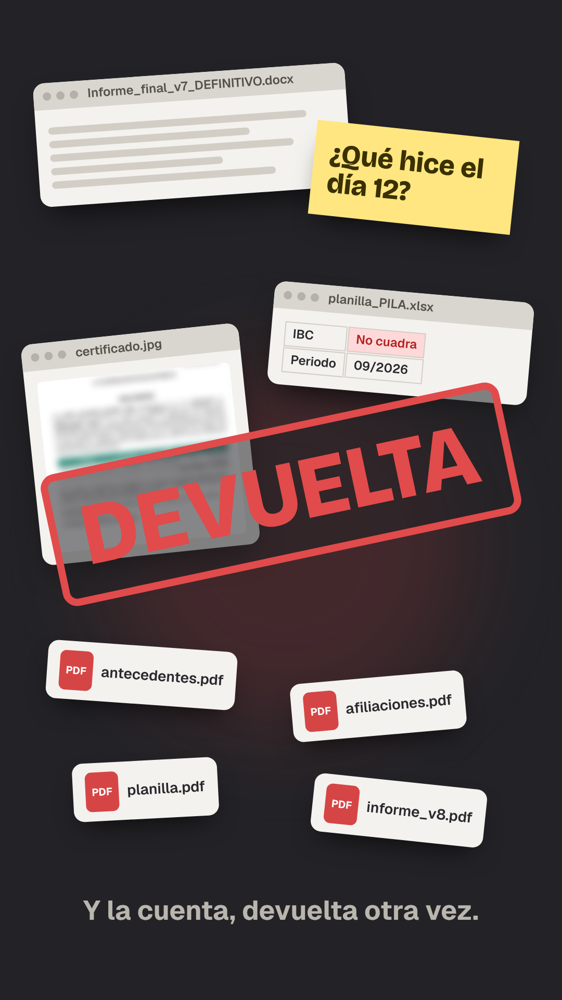
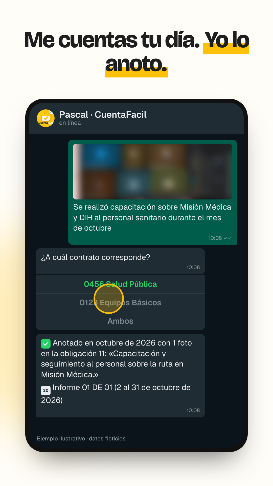
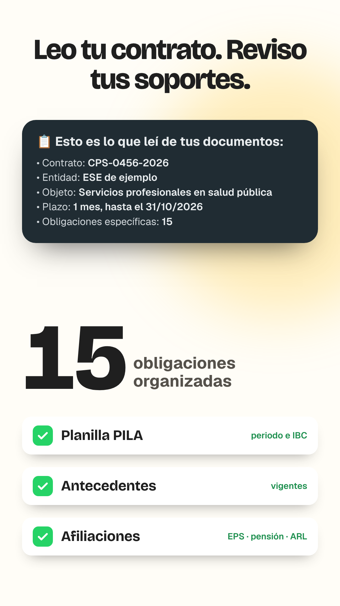
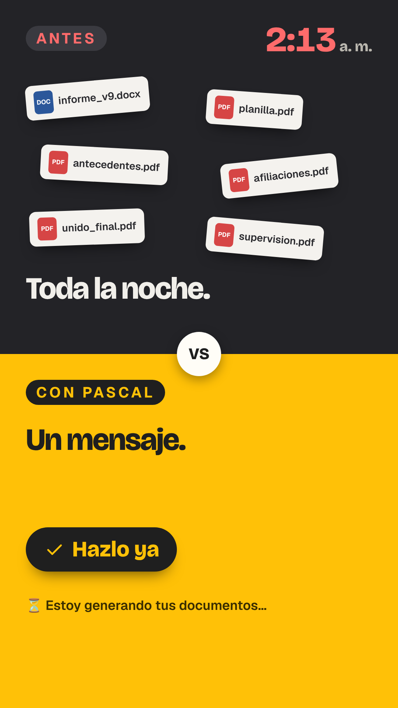
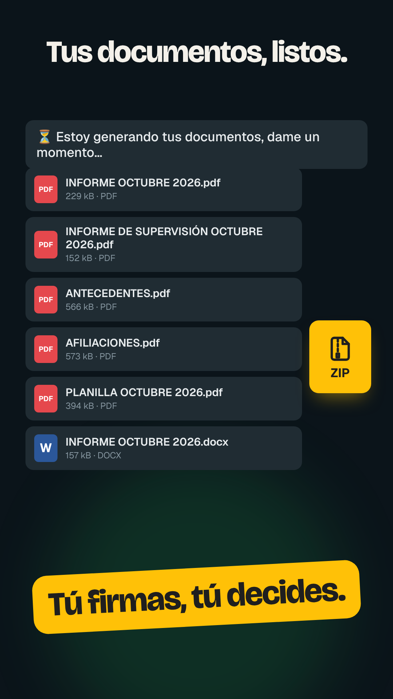
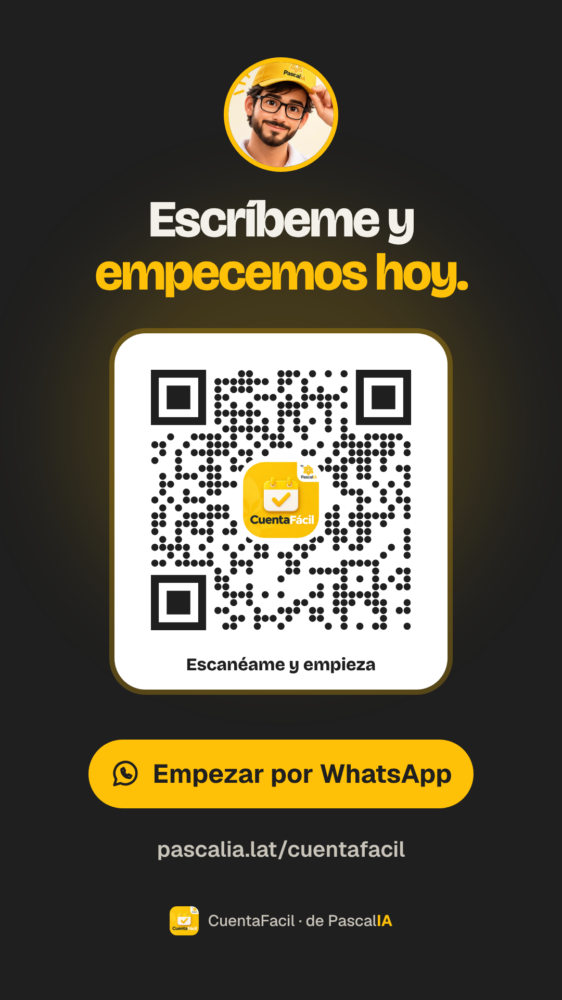

CuentaFacil · Antes y después — storyboard

01: Día 30, 11:47 p. m.
0 a 5s
Reloj del día 30 y las dos frases del dolor.

02: Todo encima
5 a 11s
Word, PDF, planilla y la nota «¿Qué hice el día 12?»; cae el sello DEVUELTA.
03: Ahora, Pascal
11 a 16s
Pascal entra y empuja el desorden; el fondo pasa a amarillo.

04: Me cuentas tu día
16 a 25s
El chat real recreado: foto difuminada, «¿A cuál contrato corresponde?», toque y «Anotado».

05: Leo tu contrato
25 a 31s
Lo que Pascal leyó (datos ficticios), contador de obligaciones y soportes revisados.

06: Antes y después
31 a 37s
Arriba la noche de archivos sueltos; abajo un solo botón: Hazlo ya.

07: Tus documentos, listos
37 a 42s
Los archivos caen en cascada y vuelan al ZIP; sello «Tú firmas, tú decides».

08: Escríbeme
42 a 48s
Pascal, QR verificado, botón de WhatsApp y dirección web.